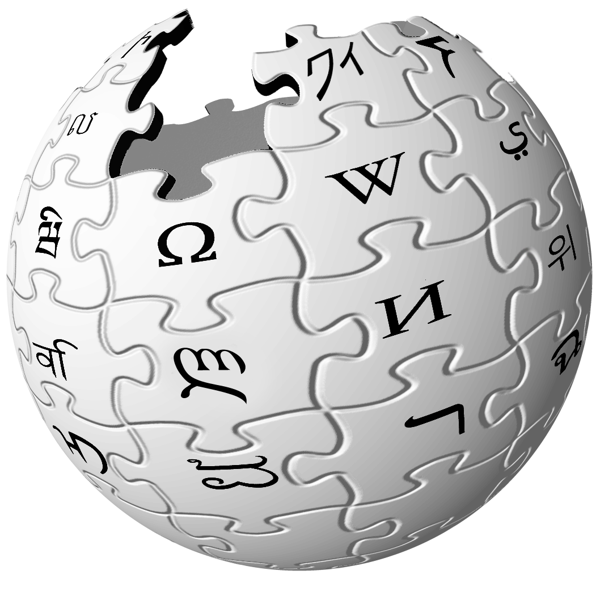

Wikipedia

«Википе́дия» (англ. Wikipedia) — общедоступная многоязычная универсальная интернет-энциклопедия
со свободным контентом, реализованная на принципах вики. Расположена по адресу
www.wikipedia.org.
Владелец сайта — американская некоммерческая организация «Фонд Викимедиа», имеющая 37 региональных представительств. Название энциклопедии образовано от английских слов wiki («вики»; в свою очередь заимствовано из гавайского языка, в котором оно имеет значение «быстро») и encyclopedia («энциклопедия»).
Запущенная в январе 2001 года Джимми Уэйлсом и Ларри Сэнгером, Википедия сейчас является самым крупным и наиболее популярным справочником в Интернете. По объёму сведений и тематическому охвату Википедия считается самой полной энциклопедией из когда-либо создававшихся за всю историю человечества. В 2015 году число зарегистрированных участников русской Википедии превысило 1,7 млн. Одним из основных достоинств Википедии как универсальной энциклопедии является возможность представления информации на родном языке пользователя. На май 2018 года разделы Википедии есть на 301 языке, а также на 493 языках в инкубаторе. Она содержит более 40 миллионов статей. Интернет-сайт Википедии является пятым по посещаемости сайтом в мире.
Владелец сайта — американская некоммерческая организация «Фонд Викимедиа», имеющая 37 региональных представительств. Название энциклопедии образовано от английских слов wiki («вики»; в свою очередь заимствовано из гавайского языка, в котором оно имеет значение «быстро») и encyclopedia («энциклопедия»).
Запущенная в январе 2001 года Джимми Уэйлсом и Ларри Сэнгером, Википедия сейчас является самым крупным и наиболее популярным справочником в Интернете. По объёму сведений и тематическому охвату Википедия считается самой полной энциклопедией из когда-либо создававшихся за всю историю человечества. В 2015 году число зарегистрированных участников русской Википедии превысило 1,7 млн. Одним из основных достоинств Википедии как универсальной энциклопедии является возможность представления информации на родном языке пользователя. На май 2018 года разделы Википедии есть на 301 языке, а также на 493 языках в инкубаторе. Она содержит более 40 миллионов статей. Интернет-сайт Википедии является пятым по посещаемости сайтом в мире.